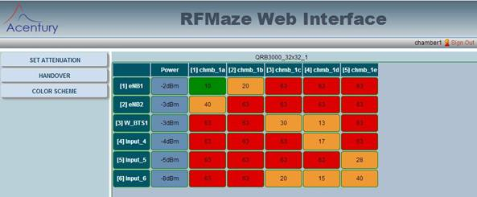
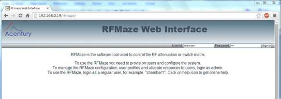
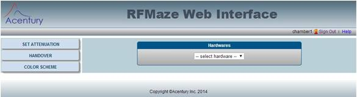
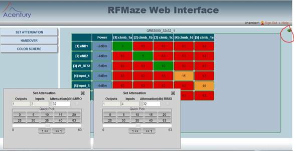
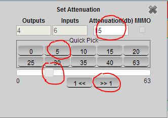
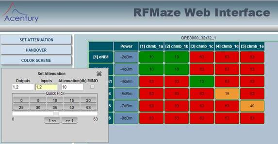
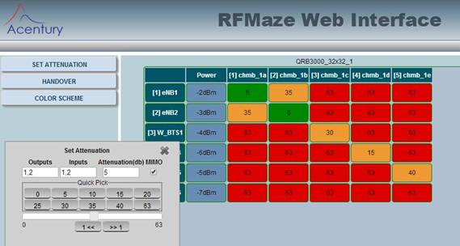
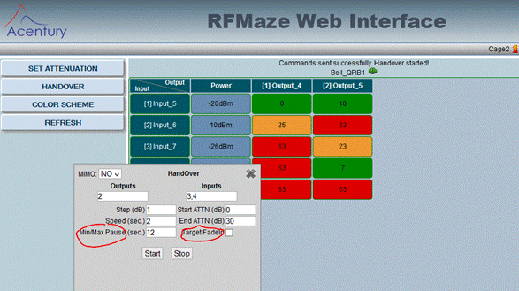
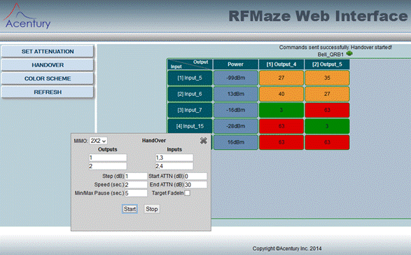
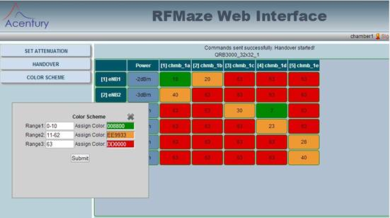

|
Acentury Inc |
RFMaze Cage or Chamber Users' Guide |
|
Unified Controller for RF Attenuation Matrices |
|
Version 1.4 |
|
|
|
October 19, 2014 |

6. COLOR SCHEME FOR THE DISPLAY
1. INTRODUCTION
The RFMaze is a unified controller for any RF
switch, RF attenuator and Optical switch matrices. It provides a single
graphical user interface to control all vendors’ hardware. It also provides a
single command line interface for automation.
This tool allows multiple users accessing the
same matrix without conflict. The flexible and powerful handover control
features make this tool superior to others, particularly in terms of MIMO.
This user guide is intended for regular end users of RF matrix, not for administrators. In the example below, regular userid is defined as chamber1, chamber2 etc. It uses Quintech QRB3000 hardware as an example for illustration.
2. INSTALLATION
Regular users don’t need to install anything.
The RFMaze can be accessed via any web browser on any computer in the network.
3. CONNECTING TO YOUR RFMaze
Follow the steps below to connect to your RFMaze and use your RF matrix.
- First obtain your userid and password from your admin. Usually, the RF chamber or RF cage is used as the userid, eg, chamber1, cage1 etc.
- Ask your admin which RF matrix hardware you are suppose to use, if there is more than one matrix.
- From a web browser (Firefox or Crome, IE is not supported right now), enter http://[rfmaze_web_server_host_or_ip]/rfmaze. In our example below, our server IP is 192.168.0.19. Userid chamber1 is used in our examples.
- Login as chamber1, default password is chamber1.

- The matrix hardware selection menu will display as below

- Click “select hardware” drop down menu and pick the matrix assigned to you by your admin. The matrix inputs and outputs assigned to you will be displayed. Usually, the portion of the inputs and outputs assigned to you is a subset of the original matrix hardware
- If no hardware shows up in the drop down menu, that means nothing was assigned to you. Talk with your admin
- The left side menu let you choose the commands to control the matrix
- Switching to another matrix hardware:
- If one user is assigned multiple matrix hardware, simply clicking the “back” button on the web browser, the above list of Hardware will be displayed again.
4. CHANGE ATTENUATION
The chart below shows your assigned portion of the RF matrix. Please note the following:
- Inputs and outputs are labeled by the admin. Mouse over will show more details of description (updated by the admin)
- “Power” displays the input power from the RF matrix, if this feature is available. Otherwise -99dBm is displayed. For Quintech QRB3000, -79dBm means no input power.
- Attenuation for inputs and outputs can be changed in many ways.

4 methods to
change attenuation for one specific input to one specific output:
- Click on a specific input/output attenuation. The “Set Attenuation” window will pop up as shown above. Maximum two pop-ups can be displayed, allowing users manually perform handover between two cells/inputs.
- Click on the “Quick Pick” value, it will be sent to the matrix hardware and reflected on your display
- Use left mouse button to hold and slide the “slide bar”, release the mouse when the desired value is reached. This value will be sent to the matrix and reflected on your display
- Alternatively, you can also type to enter a specific attenuation value and click “Set Attenuation”
- Lastly, one can
increase and decrease 1 dB at a time by clicking (not with arrow keys on the keyboard) on “>>1” or “<<1”.
The red circles in the chart below

To change attenuation for multiple inputs and outputs:
- Click on the “SET ATTENUATION” command menu, the same “Set Attenuation” window will pop up as shown above
- Enter one or more inputs and outputs in the fields, each input/output is separated by “,”. Eg, “1,3,5” means 1, 3 and 5
- Changing the attenuation follow the above steps for single attenuator
- NOTE: if inputs “1,3” and
outputs “1,2” are selected, all the 4 attenuators will change at the same time
with the same value

To change attenuation for MIMO scenario:
- Click on the “SET ATTENUATION” menu, the same “Set Attenuation” window will pop up as shown above
- Enter the MIMO inputs and outputs in the fields
- For 2x2 MIMO, output “1,2” and inputs “1,2” will trigger the two diagonal attenuators to change at the same time, as shown in the example below
- For 4x4 MIMO, outputs “1,2,3,4”
and inputs “1,2,3,4” will trigger the 4 diagonal attenuators to change at the
same time

5. HANDOVER TEST
Flexible handover scenarios can be achieved with RFMaze.
NOTE: the current QRB3000 Hardware and firmware can only make maximum 10 attenuation changes each second, although RFMaze can be set to do much faster scenarios.
Handover with one mono antenna:
- From the left side command menu, first select “HANDOVER”, the “HANDOVER” command menu will pop up as shown below
- For mono antenna, make “MIMO” is set to “NO”.
- Enter one output (to the RF chamber); enter two or more inputs (BTS antenna), eg inputs “1,3,4”, handover will happen from input 1 to 3 to 4 and back to 1; enter attenuation change step value (minimum 1dB for QRB3000, maximum 9); enter step change speed in second (from 1 to 9); set the “Start ATTN” as the starting attenuation value; set the “End ATTN”.
- Click “Start”, the handover will repeat with the above pattern. The attenuation change will be reflected on the display
- Click “Stop” to stop the handover action. Otherwise, it will repeat forever.
- Min/Max Pause: sometimes, it is desirable to pause the attenuation change when it reaches max or min value. This pause time can be selected.
- Target input/cell fade in/out:
one special scenario is to keep the home input/cell static and make the target
input/cell fade in and out continuously. This can be achieved by goggle the
selection of “Target Fade”

Handover with MIMO scenarios:
- Follow the above steps to bring up the “HANDOVER” menu.
- Select “2x2” or “4x4” in the “MIMO” field. The example below shows a 2x2 case
- Enter the appropriate output to
handover between the appropriate inputs. The example below shows ouput 4 is to
roam between input 3 and 4 at 2 dB per 2 seconds; output 5 is to roam between
input 5 and 6 with the same pattern

Stop Handover:
- Click “Stop” on the HandOver menu, the select outputs will stop roaming. If the intended outputs is not in the fields, enter the output number, click “Stop” will also stop the roaming
- At any time, if “SET Attenuation” is applied on the output, the output will also stop roaming
6. COLOR SCHEME FOR THE DISPLAY
To help users
quickly and easily identify the attenuation values for each attenuator, we
suggest use three colors for the display: GREEN for low attenuation; ORANGE for
medium attenuation and RED for high attenuation. Select “COLOR SCHEME” and pick
your preferred range for different colors.
